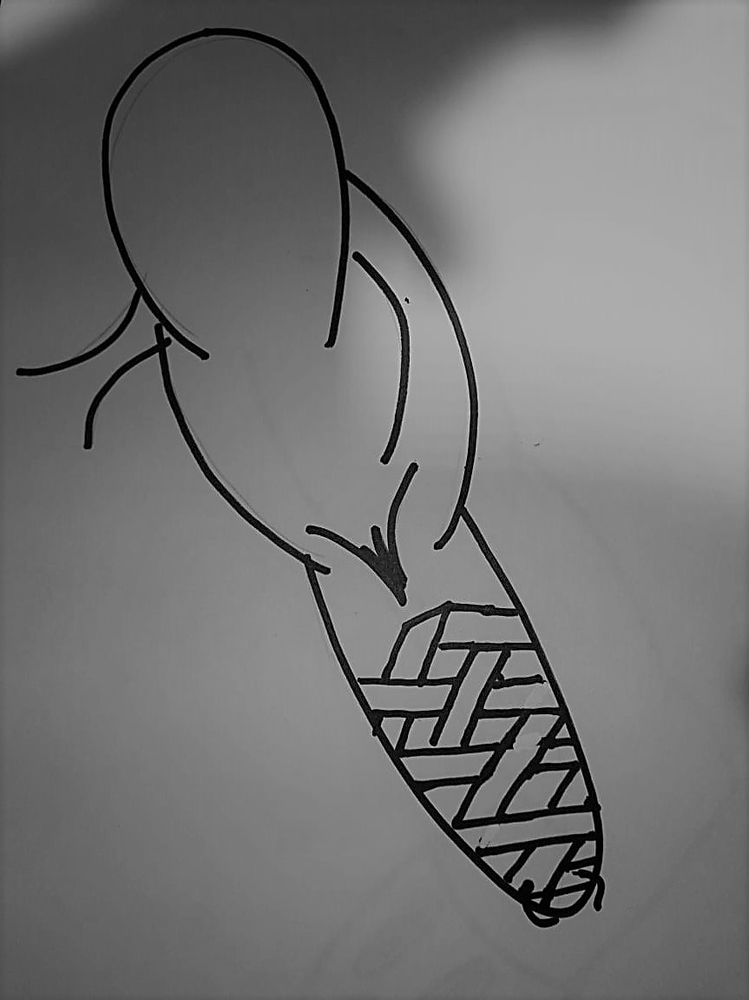
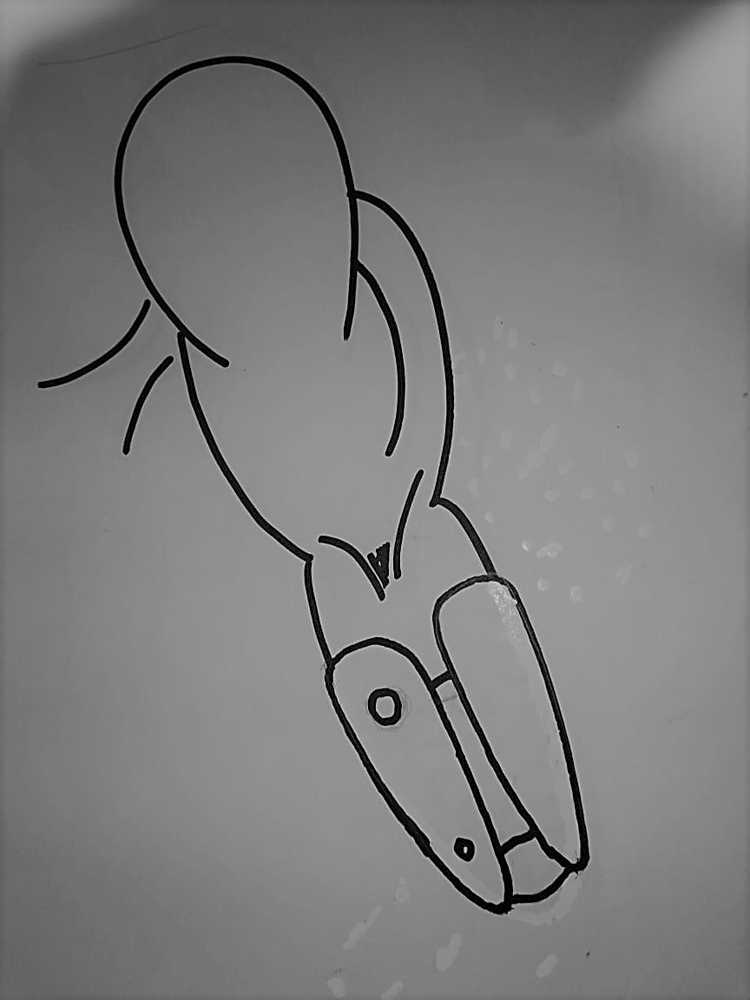
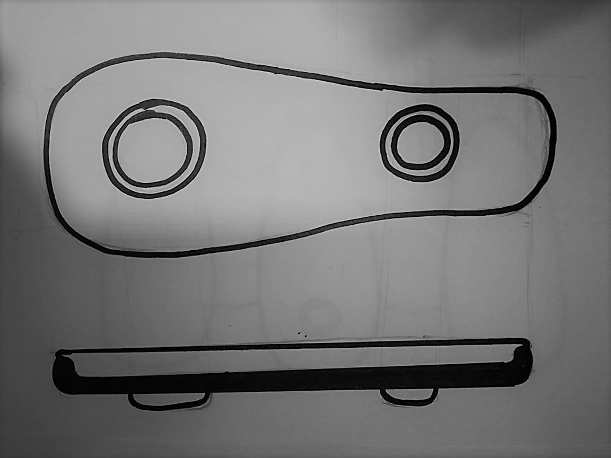
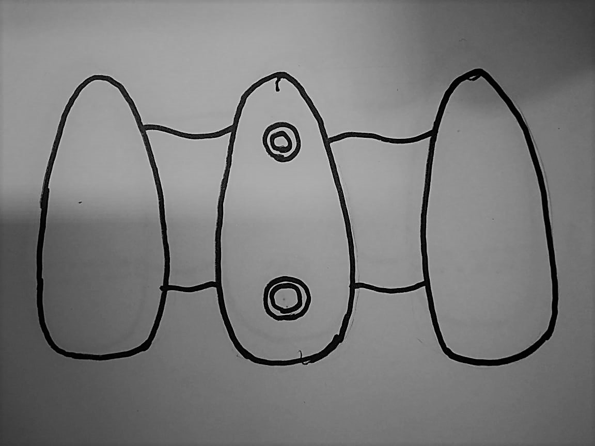
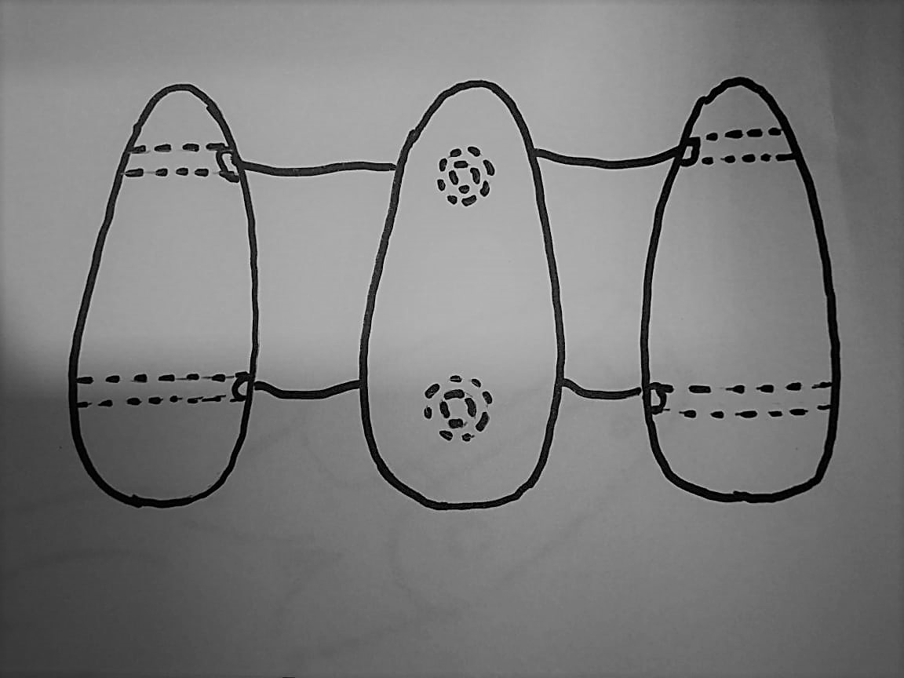
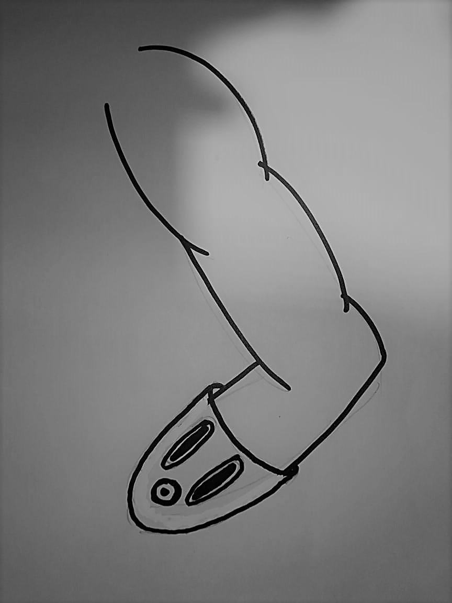

4. ESTRATEGIAS DE SOLUCIÓN
4.1. SOLUCIÓN NÚMERO 1
Esta propuesta se basa en un socket ajustable fabricado con polipropileno, un polímero termoplástico blando, hipoalergénico y transparente en un arreglo tipo malla, el cual permite el paso de luz e inhibe la proliferación de hongos. Además, el material flexible permite cambios en la dimensión del miembro residual debido a su adaptabilidad.
4.1.1. METODOLOGÍA
1. Rediseño de la interfaz: Definición de las medidas para la simulación del miembro residual. (Escáner)
2. Materiales:
- Polipropileno
- PLA
3. Diseño:
- Diseño 3D en Inventor
- Moldes con impresora 3D (8 tiras con ancho de 1.5 superficie lisa)
- Impresión de acopladores y cubierta
4. Prototipado:
Primero se realizará el diseño de moldes para las tiras, así como la cubierta y los acopladores en el programa INVENTOR, para luego ser impresos. Se verterá el polímero en el molde, esperar --- minutos para su secado, obteniendo 8 tiras, estas serán trenzadas mediante un sistema que mantiene el concepto de la artesanía “atrapadedos”. Finalmente se acoplan todas las partes para formar el socket.
4.2. SOLUCIÓN NÚMERO 2
Diseño de socket con columnas ajustable mediante correas. En este sistema hay menor área de contacto entre el miembro amputado y el socket, esto permite que la piel esté exento de la oscuridad y humedad. Las columnas contarán con un polímero ligero y flexible en la parte exterior y una parte interna con un termoplástico
4.2.1. METODOLOGÍA
1. Definición de las medidas del miembro residual
2. Materiales:
- Cubierta: PLA-PHA
- Correas: Hilos de Nylon
- Cubierta interna: capa de RTV y tela de algodón
3. Diseño:
- Prototipado virtual en Inventor con las medidas del usuario
- Prototipado en físico con los materiales entregados en el curso
- Definición del volumen real a usar de cada material
4. Construcción del socket
5. Evaluación del funcionamiento



4.3. SOLUCIÓN NÚMERO 3
Consiste en una interfaz de tres columnas fabricado con fibra de carbono y con una cubierta interna de una combinación de PVC y algodón cómodo para el usuario, la cual será bañada con iones de plata y sellada. Este tendrá un sistema de ajuste mecánico que usa una perillas y cordones.
